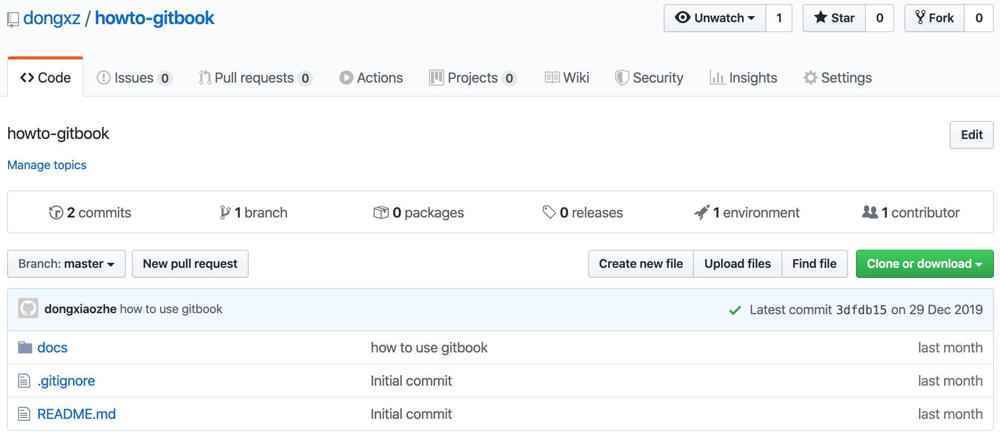
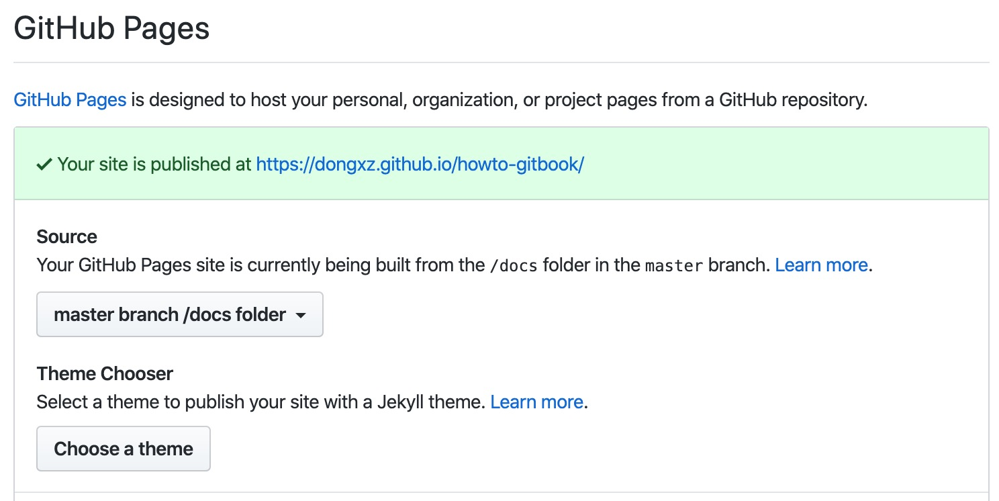

GitHub Page
Step 1. 创建 GitHub 仓库
创建 Public 仓库，建议使用一级目录（如下图 docs 目录）存放 gitbook build results，方便后续覆盖式更新。

Step 2. 配置 GigHub Page
打开仓库 Settings 往下翻，找到 GitHub Pages 配置项，具体配置参考下图

Step 3. 构建
笔者使用了两个仓库分别管理源码与发布内容，这样的好处是操作简单。
# gitbook源码
$ export BOOK_SOURCE_DIR=<uuu/vvv/www>
# gitbook刊物目录，需要指定为上述提到的仓库内一级目录，如docs
$ export BOOK_PUBLISH_DIR=<xxx/yyy/zzz/docs>
# 发刊啦
$ gitbook build $BOOK_SOURCE_DIR $BOOK_PUBLISH_DIR
Step 4. 发刊
上传 github 就 ok 啦，github 会自动更新 github page。
$ git push origin master